Praktikum 5: Navigasi dan Expense Tracker
A. Pendahuluan
Navigasi merupakan salah satu bagian penting dalam pengembangan aplikasi mobile karena memungkinkan pengguna berpindah dari satu halaman ke halaman lain secara teratur. Pada Flutter, perpindahan halaman dapat diatur menggunakan Named Routes, yaitu pemberian nama pada setiap rute yang didaftarkan di dalam MaterialApp. Selain itu, BottomNavigationBar digunakan untuk menyediakan menu navigasi di bagian bawah aplikasi sehingga pengguna dapat membuka halaman utama seperti Dashboard, Riwayat Transaksi, dan Profil dengan mudah.
Pada Praktikum V ini dikembangkan aplikasi pencatat keuangan sederhana bernama Expense Tracker. Aplikasi menggabungkan navigasi halaman, formulir login, ringkasan keuangan, penambahan transaksi, daftar riwayat transaksi, dan halaman profil. Praktikum ini juga menerapkan StatefulWidget, setState(), serta penyimpanan data sementara agar perubahan transaksi dapat langsung terlihat pada halaman aplikasi.
B. Tujuan
Tujuan dari praktikum ini adalah:
- Memahami penerapan Named Routes untuk mengatur perpindahan halaman pada Flutter.
- Membuat BottomNavigationBar untuk berpindah antara Dashboard, Riwayat Transaksi, dan Profil.
- Menerapkan StatefulWidget dan setState() untuk menangani perubahan tab dan input pengguna.
- Membuat halaman login berisi kolom email dan password serta meneruskan email ke halaman utama.
- Membuat halaman penambahan transaksi dan menampilkan hasilnya pada Dashboard serta Riwayat Transaksi.
- Membuat halaman Profil berisi avatar, nama, email, dan tombol logout.
C. Isi
Praktikum
MaterialApp merupakan konfigurasi utama aplikasi. Properti initialRoute menentukan halaman pertama yang dibuka, yaitu LoginScreen. Map routes mendaftarkan nama rute beserta widget tujuan: /login untuk halaman login, / untuk halaman utama, dan /add untuk formulir penambahan transaksi. Dengan cara ini, perpindahan halaman dapat dilakukan berdasarkan nama rute tanpa membuat MaterialPageRoute secara berulang.
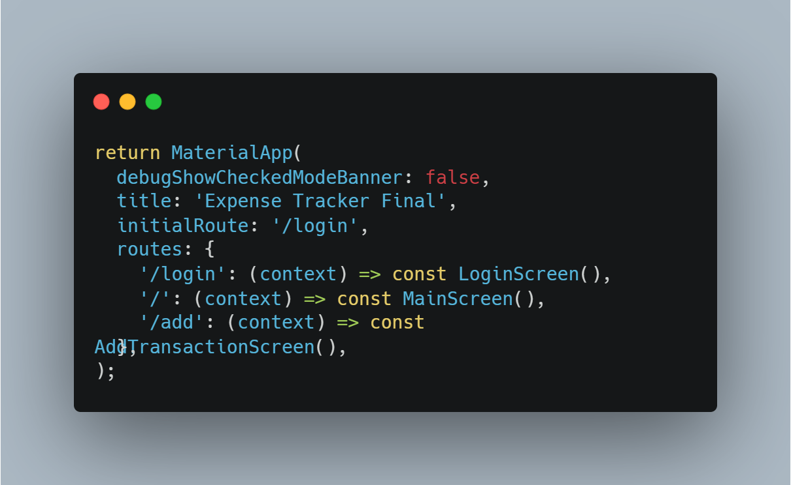
MainScreen dibuat sebagai StatefulWidget karena tab yang dipilih dapat berubah selama aplikasi berjalan. Variabel _selectedIndex menyimpan indeks tab aktif; nilai 0 berarti Dashboard. Fungsi _onItemTapped menerima indeks dari tab yang ditekan, kemudian setState() memberi tahu Flutter untuk memperbarui tampilan sesuai nilai yang baru.
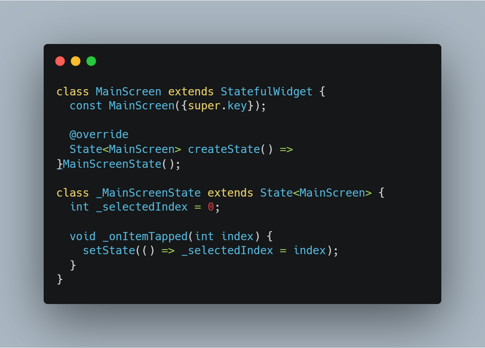
IndexedStack menampilkan halaman berdasarkan _selectedIndex, dengan urutan Dashboard, Riwayat, lalu Profil. Callback onViewHistory memungkinkan Dashboard membuka tab Riwayat. Tombol FloatingActionButton hanya ditampilkan ketika tab Dashboard aktif. Saat tombol ditekan, Navigator.pushNamed() membuka halaman tambah transaksi melalui rute /add yang sudah didaftarkan.
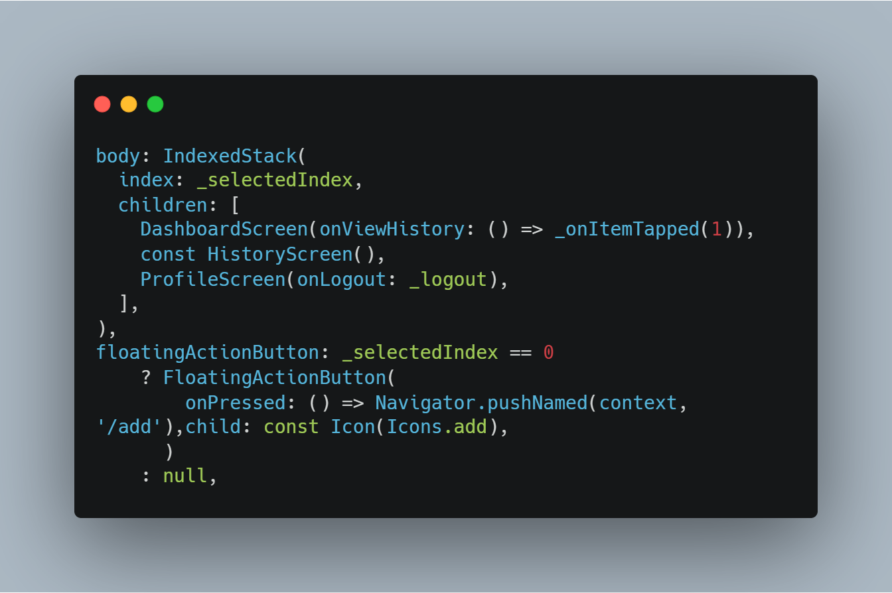
BottomNavigationBar menyediakan tiga pilihan navigasi. currentIndex menandai tab yang sedang aktif, sedangkan onTap menjalankan fungsi _onItemTapped ketika pengguna memilih tab lain. Setiap BottomNavigationBarItem berisi ikon dan label yang mewakili halaman Beranda, Riwayat, dan Profil.
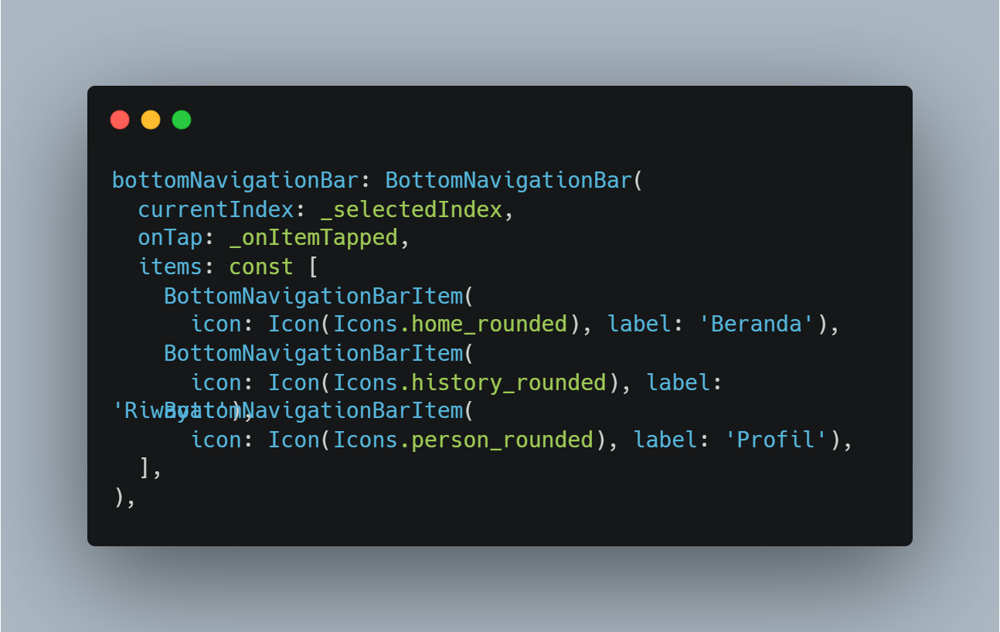
TransactionStore.instance mengakses penyimpanan transaksi yang dipakai bersama oleh halaman aplikasi. AnimatedBuilder mendengarkan perubahan pada store dan membangun ulang tampilan ketika data berubah. Dashboard mengambil tiga transaksi terbaru, menampilkan nama serta email pengguna, dan menunjukkan saldo, total pemasukan, serta total pengeluaran. Fungsi formatRupiah() digunakan agar nominal tampil dalam format rupiah.
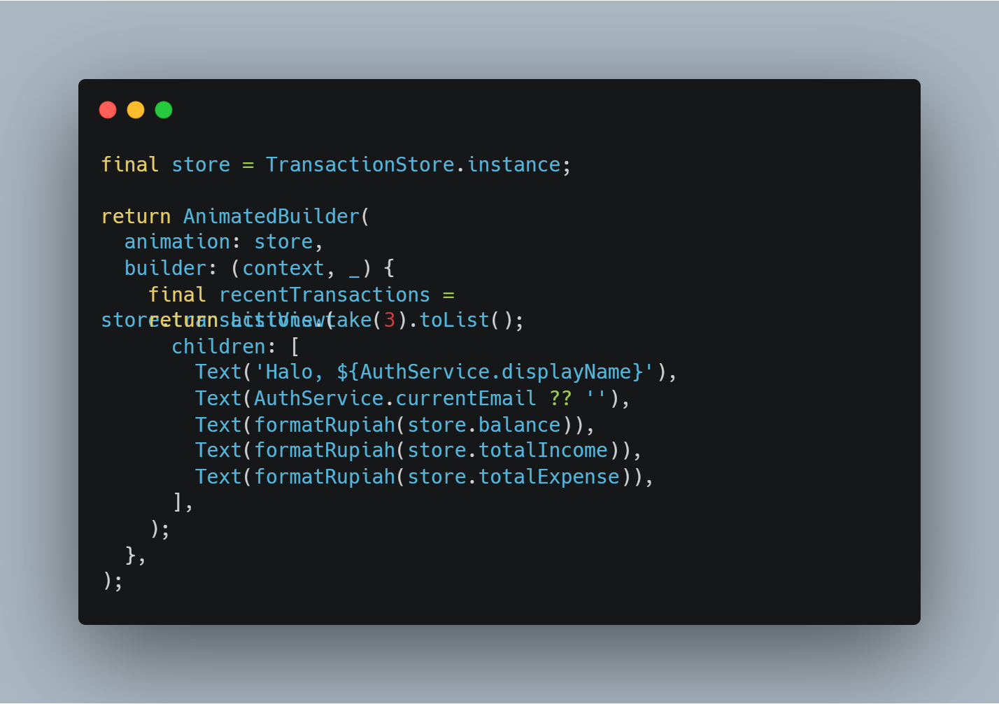
Fungsi _saveTransaction() pertama-tama memeriksa validasi formulir. Jika input belum valid, proses dihentikan. Nilai nominal kemudian diubah menjadi angka dan dipakai untuk membentuk objek ExpenseTransaction yang menyimpan ID, nama transaksi, jumlah, kategori, tanggal, serta jenis transaksi. Objek ditambahkan ke TransactionStore, lalu Navigator.pop() menutup formulir dan kembali ke halaman sebelumnya.
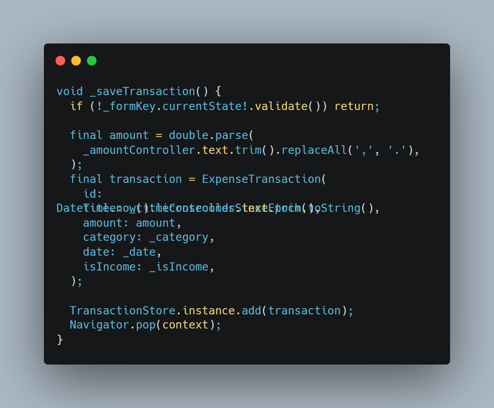
Tugas
Fungsi _login() memastikan formulir lolos validasi sebelum melanjutkan. Email yang dimasukkan disimpan melalui AuthService.login(). Setelah itu, aplikasi berpindah ke rute / yang merupakan MainScreen. pushNamedAndRemoveUntil() sekaligus menghapus halaman sebelumnya dari tumpukan navigasi sehingga tombol kembali tidak membawa pengguna ke halaman login.
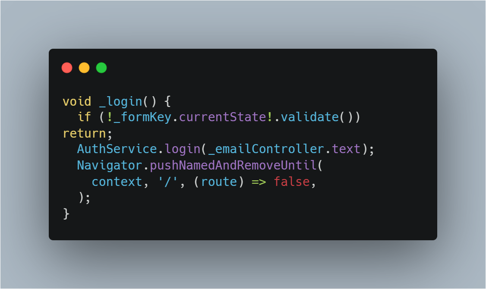
TextFormField pertama digunakan untuk memasukkan email dan memeriksa bahwa format sederhananya memuat karakter @ serta titik. TextFormField kedua menerima password; obscureText menyembunyikan karakter password saat diketik. Validator mengembalikan pesan kesalahan apabila input kosong atau tidak sesuai aturan. Pada implementasi praktikum ini, login masih simulasi dan belum memverifikasi kredensial ke server.
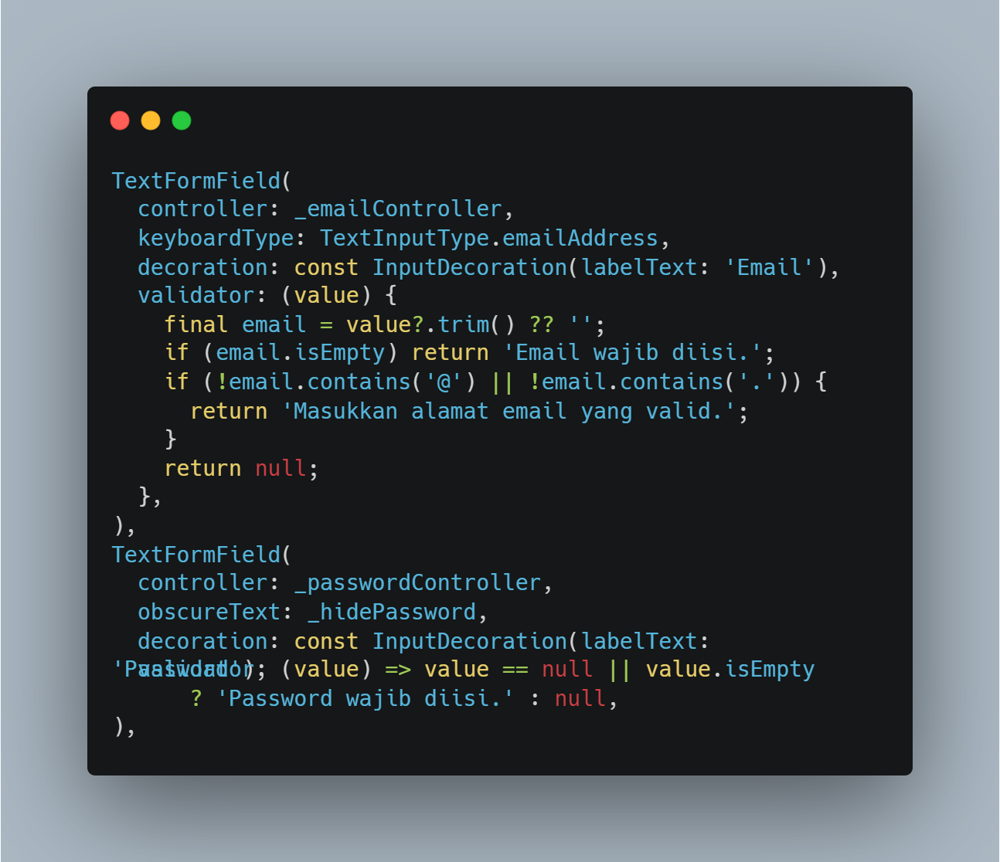
HistoryScreen membaca daftar transaksi dari TransactionStore. AnimatedBuilder membuat daftar diperbarui ketika store memberi notifikasi perubahan. Jika belum ada transaksi, aplikasi menampilkan pesan kosong. Jika data tersedia, ListView.separated membuat daftar dengan jarak antaritem; setiap transaksi ditampilkan melalui widget _HistoryTile.
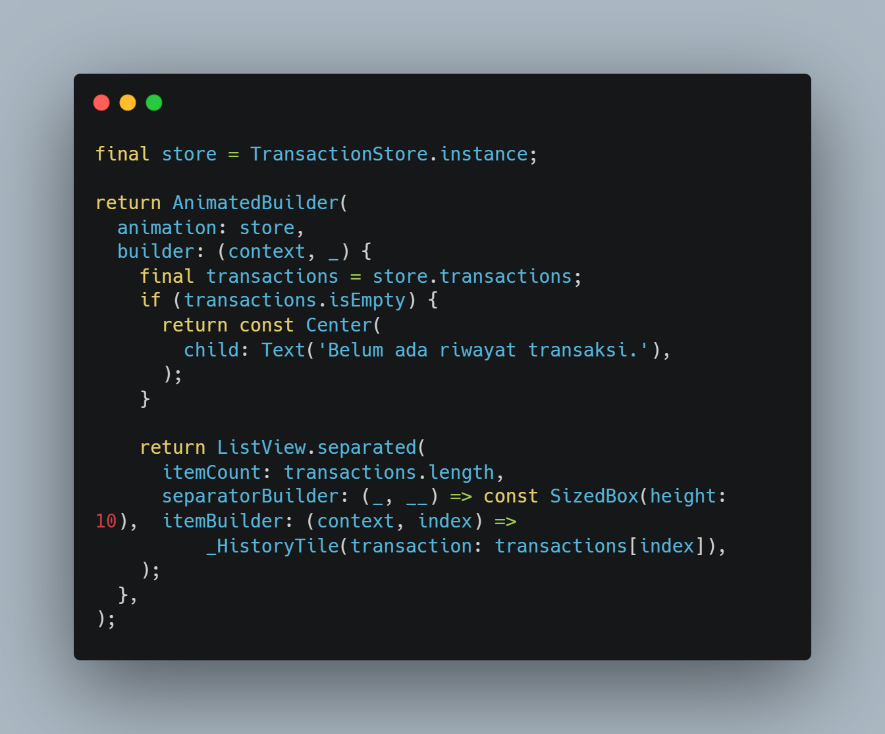
Email diambil dari AuthService, sedangkan nama tampilan dibentuk dari bagian email sebelum tanda @. Huruf pertama nama digunakan sebagai avatar. Widget Text menampilkan nama dan email, sementara tombol Logout memunculkan dialog konfirmasi sebelum pengguna benar-benar keluar dari aplikasi.
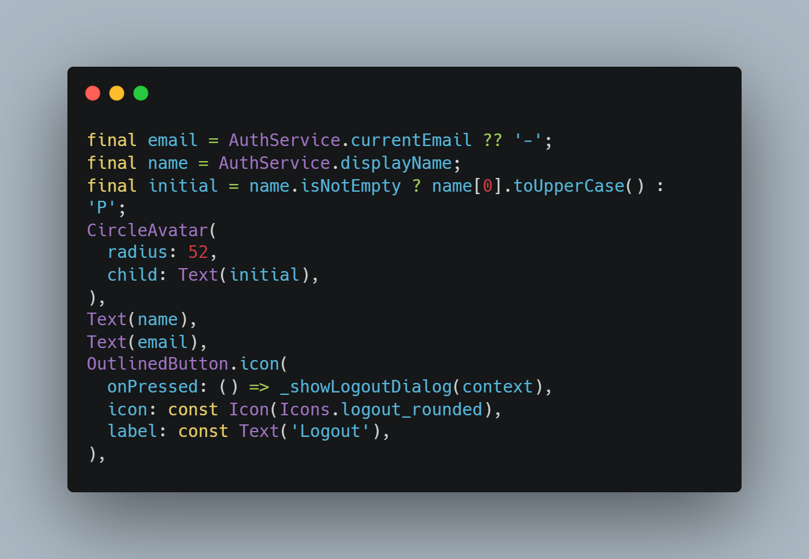
AuthService.logout() menghapus email pengguna dari sesi simulasi. Selanjutnya, aplikasi diarahkan ke rute /login dan seluruh halaman sebelumnya dihapus dari tumpukan navigasi. Dengan demikian, setelah logout pengguna kembali ke halaman login.
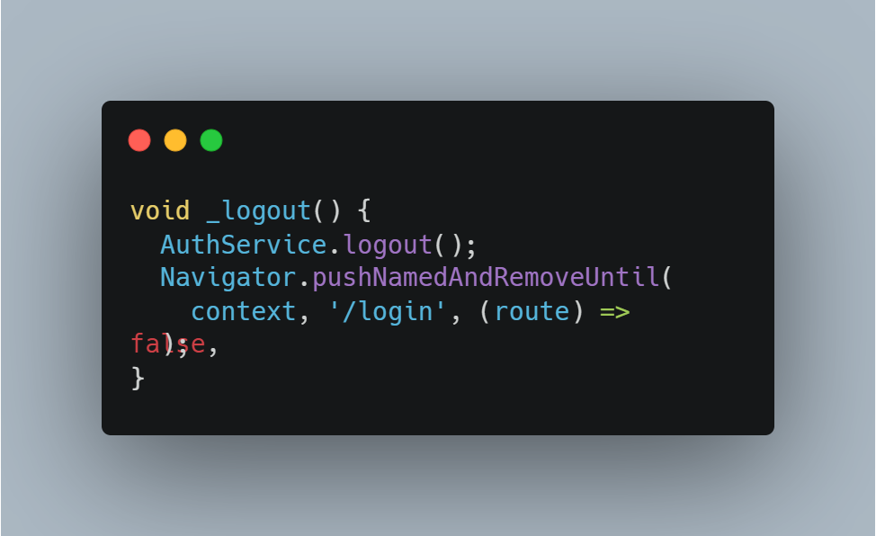
totalIncome menjumlahkan transaksi yang bertipe pemasukan, sedangkan totalExpense menjumlahkan transaksi yang bukan pemasukan. Saldo dihitung dari total pemasukan dikurangi total pengeluaran. Method add() memasukkan transaksi baru ke daftar dan memanggil notifyListeners() agar widget yang mendengarkan store, seperti Dashboard dan Riwayat, mengetahui bahwa data telah berubah.
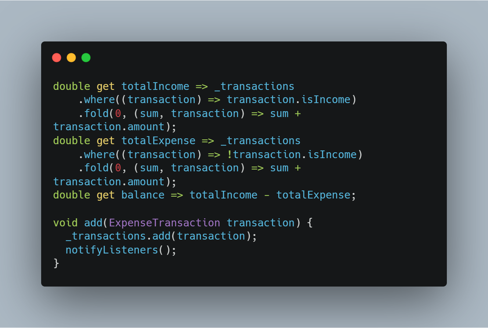
ExpenseTransaction merupakan model untuk merepresentasikan satu transaksi. Model menyimpan ID, nama, nominal, kategori, tanggal, dan status apakah transaksi berupa pemasukan. Kata required memastikan semua data tersebut harus diberikan ketika objek transaksi dibuat. Model membuat struktur data lebih konsisten saat digunakan pada Dashboard dan Riwayat.
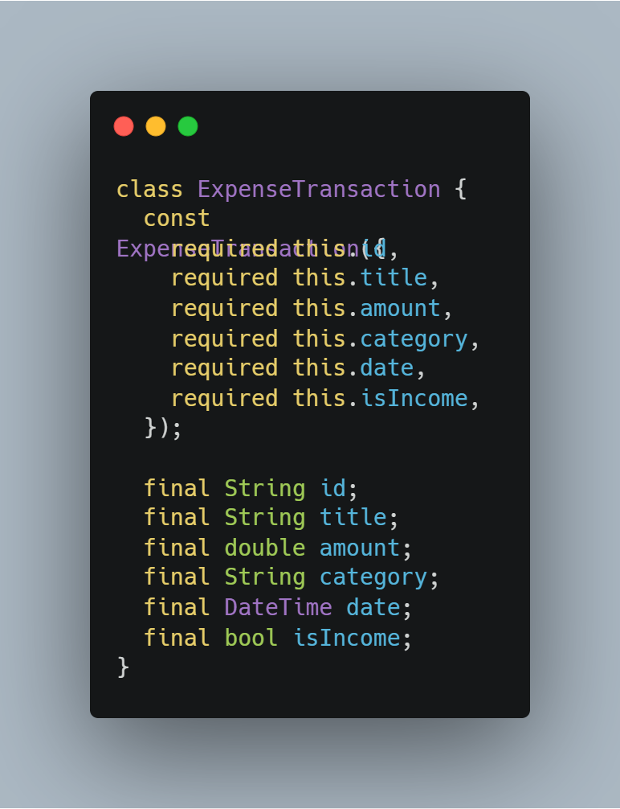
Fungsi formatRupiah() membulatkan nominal menjadi bilangan bulat, lalu mengubahnya menjadi teks. RegExp digunakan untuk menambahkan tanda titik setiap kelompok tiga digit sehingga nominal terlihat seperti Rp 1.500.000. Fungsi ini dipakai saat menampilkan nilai keuangan pada Dashboard dan daftar transaksi.
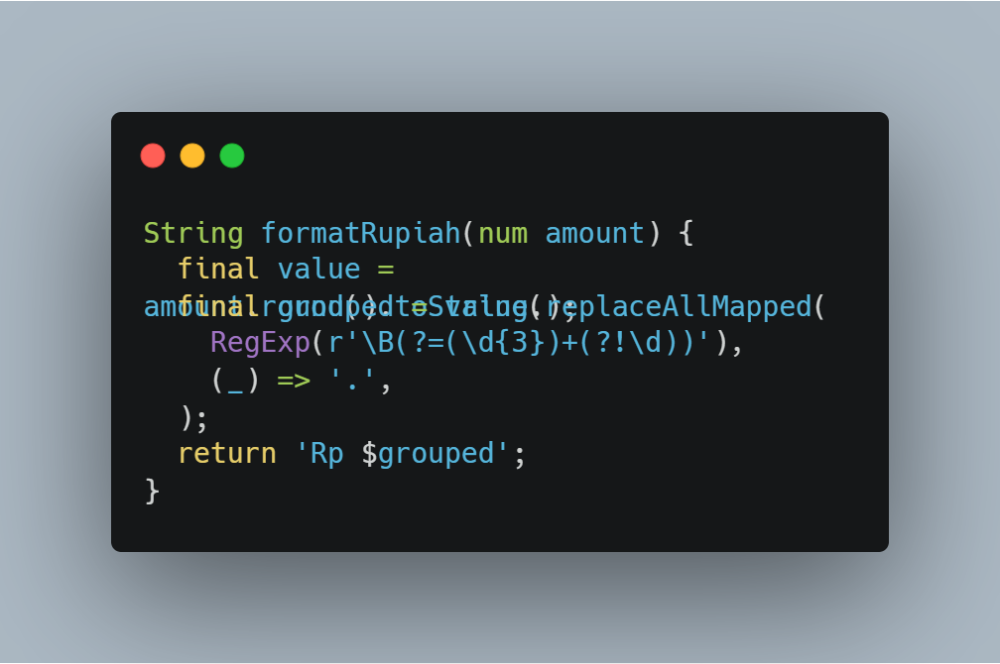
Hasil akhir aplikasi Expense Tracker menampilkan seluruh fitur yang telah dikembangkan, mulai dari login, dashboard dengan ringkasan keuangan, penambahan transaksi, riwayat transaksi, hingga profil pengguna dengan fitur logout.
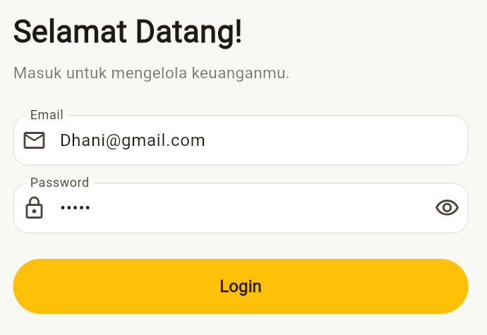
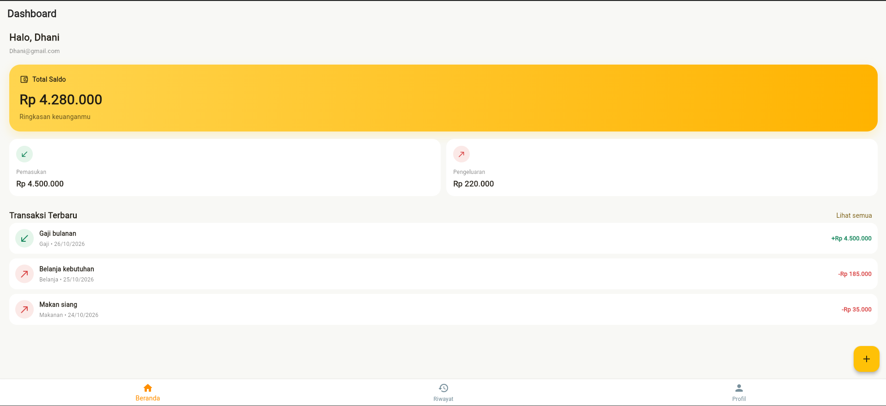
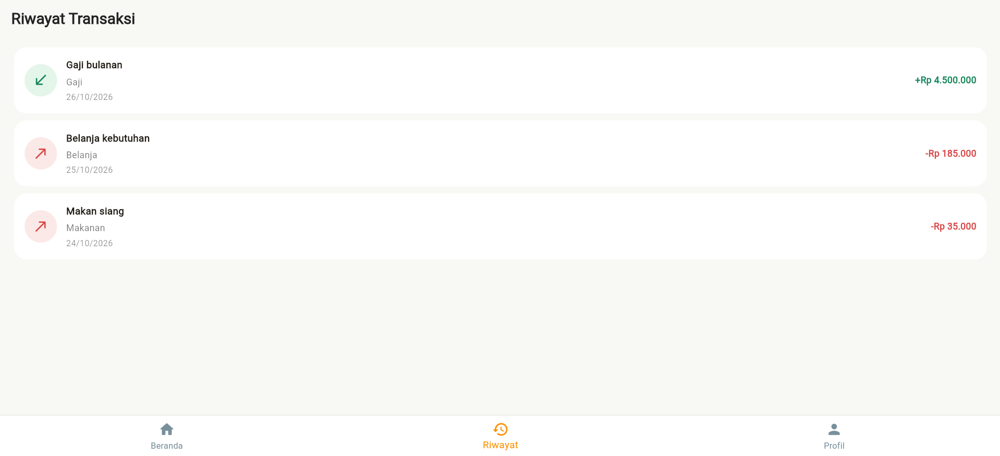
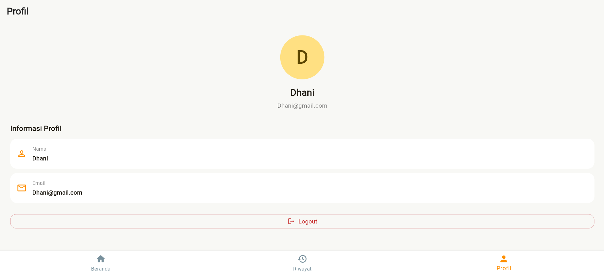
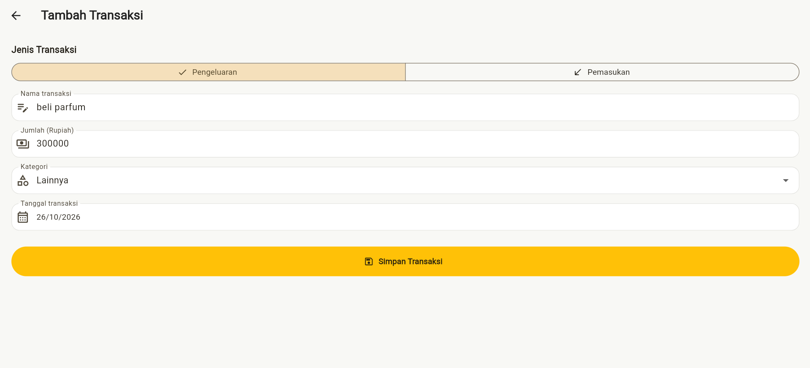
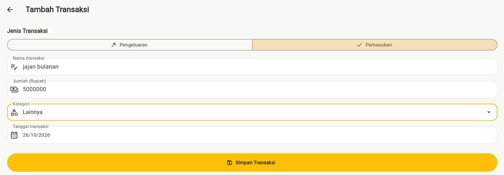
D. Kesimpulan
Praktikum ini menunjukkan bahwa Named Routes dapat mengatur perpindahan halaman secara terpusat, sedangkan BottomNavigationBar memudahkan pengguna berpindah di antara Dashboard, Riwayat Transaksi, dan Profil. Formulir Login digunakan untuk menerima email pengguna, halaman tambah transaksi memasukkan data ke penyimpanan bersama, dan perubahan data ditampilkan kembali melalui Dashboard serta Riwayat. Pembuatan halaman Profil melengkapi fitur aplikasi dengan informasi pengguna dan logout. Namun, autentikasi masih berupa simulasi dan transaksi hanya disimpan di memori selama aplikasi berjalan, sehingga data belum tersimpan secara permanen setelah aplikasi dihentikan.